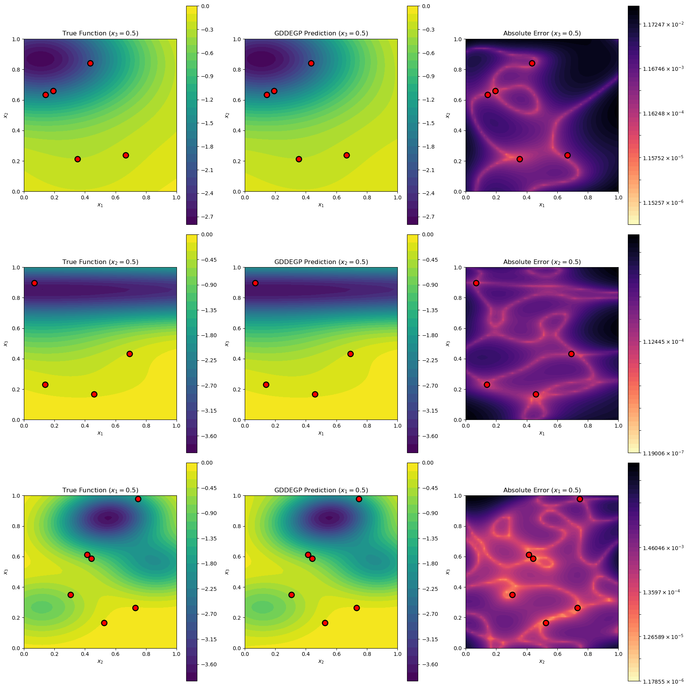

3D Example: GDDEGP on Hartmann3 Function with Multiple Directional Derivatives#
This example demonstrates GDDEGP on a 3-variable function using gradient-aligned and perpendicular directional derivatives at each training point.
Configuration#
import numpy as np
import pyoti.sparse as oti
import itertools
from jetgp.full_gddegp.gddegp import gddegp
from scipy.stats import qmc
import jetgp.utils as utils
n_order = 1
n_bases = 3
num_directions_per_point = 3 # gradient + 2 perpendicular directions
num_training_pts = 50
domain_bounds = ((0.0, 1.0), (0.0, 1.0), (0.0, 1.0))
normalize_data = True
kernel = "SE"
kernel_type = "anisotropic"
n_restarts = 15
swarm_size = 200
random_seed = 42
np.random.seed(random_seed)
print("GDDEGP 3D Example: Hartmann3 Function")
print(f"Training points: {num_training_pts}")
print(f"Directions per point: {num_directions_per_point}")
print(f"Total observations: {num_training_pts * (1 + num_directions_per_point)}")
GDDEGP 3D Example: Hartmann3 Function
Training points: 50
Directions per point: 3
Total observations: 200
Define Hartmann3 Function#
def hartmann3(X, alg=np):
"""3D Hartmann function - standard optimization benchmark."""
alpha = np.array([1.0, 1.2, 3.0, 3.2])
A = np.array([[3.0, 10, 30],
[0.1, 10, 35],
[3.0, 10, 30],
[0.1, 10, 35]])
P = 1e-4 * np.array([[3689, 1170, 2673],
[4699, 4387, 7470],
[1091, 8732, 5547],
[381, 5743, 8828]])
result = alg.zeros(X.shape[0]) if hasattr(alg, 'zeros') else np.zeros(X.shape[0])
for i in range(4):
inner = alg.zeros(X.shape[0]) if hasattr(alg, 'zeros') else np.zeros(X.shape[0])
for j in range(3):
inner = inner + A[i, j] * (X[:, j] - P[i, j])**2
result = result - alpha[i] * alg.exp(-inner)
return result
def hartmann3_gradient(x1, x2, x3):
"""Analytical gradient of Hartmann3 function."""
alpha = np.array([1.0, 1.2, 3.0, 3.2])
A = np.array([[3.0, 10, 30],
[0.1, 10, 35],
[3.0, 10, 30],
[0.1, 10, 35]])
P = 1e-4 * np.array([[3689, 1170, 2673],
[4699, 4387, 7470],
[1091, 8732, 5547],
[381, 5743, 8828]])
grad = np.zeros(3)
X = np.array([x1, x2, x3])
for i in range(4):
inner = np.sum(A[i, :] * (X - P[i, :])**2)
exp_term = np.exp(-inner)
for j in range(3):
grad[j] += 2 * alpha[i] * A[i, j] * (X[j] - P[i, j]) * exp_term
return grad
Gram-Schmidt Orthonormalization#
def gram_schmidt_orthonormal(v1):
"""
Generate 2 orthonormal vectors perpendicular to v1.
v1 should be a unit vector.
"""
# Find a vector not parallel to v1
if abs(v1[0]) < 0.9:
v2_init = np.array([1.0, 0.0, 0.0])
else:
v2_init = np.array([0.0, 1.0, 0.0])
# First perpendicular vector
v2 = v2_init - np.dot(v2_init, v1) * v1
v2 = v2 / np.linalg.norm(v2)
# Second perpendicular vector
v3 = np.cross(v1, v2)
v3 = v3 / np.linalg.norm(v3)
return v2, v3
Generate Training Data#
def generate_training_data():
"""Generate GDDEGP training data with multiple rays per point."""
# Latin Hypercube Sampling
sampler = qmc.LatinHypercube(d=n_bases, seed=random_seed)
unit_samples = sampler.random(n=num_training_pts)
X_train = qmc.scale(unit_samples,
[b[0] for b in domain_bounds],
[b[1] for b in domain_bounds])
print("Generating directional derivatives...")
# Create rays: gradient + 2 perpendicular directions
rays_list = [[] for _ in range(num_directions_per_point)]
for idx, (x1, x2, x3) in enumerate(X_train):
# Compute gradient direction
grad = hartmann3_gradient(x1, x2, x3)
grad_norm = np.linalg.norm(grad)
if grad_norm > 1e-10:
ray_grad = grad / grad_norm
else:
ray_grad = np.array([1.0, 0.0, 0.0])
# Generate perpendicular directions
ray_perp1, ray_perp2 = gram_schmidt_orthonormal(ray_grad)
rays_list[0].append(ray_grad.reshape(-1, 1))
rays_list[1].append(ray_perp1.reshape(-1, 1))
rays_list[2].append(ray_perp2.reshape(-1, 1))
if idx < 3: # Show first few
print(f" Point {idx}: grad={ray_grad}")
# Apply global perturbations
X_pert = oti.array(X_train)
for i in range(num_directions_per_point):
e_tag = oti.e(i+1, order=n_order)
for j in range(len(rays_list[i])):
perturbation = oti.array(rays_list[i][j]) * e_tag
X_pert[j, :] += perturbation.T
# Evaluate with hypercomplex AD
f_hc = hartmann3(X_pert, alg=oti)
# Truncate cross-derivatives
for combo in itertools.combinations(range(1, num_directions_per_point+1), 2):
f_hc = f_hc.truncate(combo)
# Extract derivatives
y_train_list = [f_hc.real.reshape(-1, 1)]
der_indices_to_extract = [ [ [[i, 1]] for i in range(1, num_directions_per_point+1)]]
for group in der_indices_to_extract:
for sub_group in group:
y_train_list.append(f_hc.get_deriv(sub_group).reshape(-1, 1))
print(f"Data structure:")
print(f" Function values: {y_train_list[0].shape}")
for i in range(1, len(y_train_list)):
print(f" Direction {i} derivatives: {y_train_list[i].shape}")
return {'X_train': X_train,
'y_train_list': y_train_list,
'rays_list': rays_list,
'der_indices': der_indices_to_extract}
training_data = generate_training_data()
Generating directional derivatives...
Point 0: grad=[ 0.13366276 -0.03709979 -0.9903322 ]
Point 1: grad=[0.28965432 0.082479 0.95357097]
Point 2: grad=[0.01400605 0.23698152 0.97141319]
Data structure:
Function values: (50, 1)
Direction 1 derivatives: (50, 1)
Direction 2 derivatives: (50, 1)
Direction 3 derivatives: (50, 1)
Train GDDEGP Model#
def train_model(training_data):
"""Initialize and train GDDEGP model."""
print("Training GDDEGP model...")
rays_array = [np.hstack(training_data['rays_list'][i])
for i in range(num_directions_per_point)]
derivative_locations = []
for i in range(len(training_data['der_indices'])):
for j in range(len(training_data['der_indices'][i])):
derivative_locations.append([i for i in range(len(training_data['X_train']))])
gp_model = gddegp(
training_data['X_train'],
training_data['y_train_list'],
n_order=1,
rays_list=rays_array,
der_indices=training_data['der_indices'],
derivative_locations = derivative_locations,
normalize=normalize_data,
kernel=kernel,
kernel_type=kernel_type
)
print("Optimizing hyperparameters...")
params = gp_model.optimize_hyperparameters(
optimizer='jade',
pop_size = 100,
n_generations = 15,
local_opt_every = 5,
debug = True
)
return gp_model, params
gp_model, params = train_model(training_data)
Training GDDEGP model...
Optimizing hyperparameters...
Gen 1: best f=491.77059448837406
Gen 2: best f=491.77059448837406
Gen 3: best f=491.77059448837406
Gen 4: best f=491.77059448837406
Local refinement improved at gen 5: f=62.41236399337933
Gen 5: best f=62.41236399337933
Gen 6: best f=62.41236399337933
Gen 7: best f=62.41236399337933
Gen 8: best f=62.41236399337933
Gen 9: best f=62.41236399337933
Local refinement improved at gen 10: f=-31.292717633131133
Gen 10: best f=-31.292717633131133
Stopping: Objective improvement < 1e-06 at generation 10
Evaluate Model#
def evaluate_model(gp_model, params, training_data):
"""Evaluate GDDEGP on test points."""
print("Evaluating model on test set...")
# Generate test points
n_test = 1000
sampler = qmc.LatinHypercube(d=n_bases, seed=random_seed + 1)
unit_test = sampler.random(n=n_test)
X_test = qmc.scale(unit_test,
[b[0] for b in domain_bounds],
[b[1] for b in domain_bounds])
# Predict
y_pred_full = gp_model.predict(
X_test, params,
calc_cov=False, return_deriv=False
)
y_pred = y_pred_full[:n_test]
# Ground truth
y_true = hartmann3(X_test, alg=np)
# Error metrics
nrmse = utils.nrmse(y_true.flatten(), y_pred.flatten())
mae = np.mean(np.abs(y_true - y_pred))
max_error = np.max(np.abs(y_true - y_pred))
print(f"Test set size: {n_test} points")
print(f"Performance metrics:")
print(f" NRMSE: {nrmse:.6f}")
print(f" MAE: {mae:.6f}")
print(f" Max error: {max_error:.6f}")
return nrmse, mae, max_error
nrmse, mae, max_error = evaluate_model(gp_model, params, training_data)
Evaluating model on test set...
Test set size: 1000 points
Performance metrics:
NRMSE: 0.003981
MAE: 0.007087
Max error: 0.127406
Visualize 2D Slices#
import matplotlib.pyplot as plt
from matplotlib.colors import LogNorm
def visualize_slices(gp_model, params, training_data):
"""Visualize 2D slices through the 3D function."""
print("Generating visualizations...")
X_train = training_data['X_train']
n_points = 50
# Define three slice configurations
slices = [
{'name': '$x_3=0.5$', 'fixed_dim': 2, 'fixed_val': 0.5,
'var_dims': [0, 1], 'labels': ['$x_1$', '$x_2$']},
{'name': '$x_2=0.5$', 'fixed_dim': 1, 'fixed_val': 0.5,
'var_dims': [0, 2], 'labels': ['$x_1$', '$x_3$']},
{'name': '$x_1=0.5$', 'fixed_dim': 0, 'fixed_val': 0.5,
'var_dims': [1, 2], 'labels': ['$x_2$', '$x_3$']}
]
fig, axes = plt.subplots(3, 3, figsize=(18, 18))
for row, slice_info in enumerate(slices):
fixed_dim = slice_info['fixed_dim']
fixed_val = slice_info['fixed_val']
var_dims = slice_info['var_dims']
# Create slice grid
x1_vals = np.linspace(0, 1, n_points)
x2_vals = np.linspace(0, 1, n_points)
X1_grid, X2_grid = np.meshgrid(x1_vals, x2_vals)
# Build full 3D points for this slice
X_slice = np.zeros((n_points * n_points, 3))
X_slice[:, var_dims[0]] = X1_grid.ravel()
X_slice[:, var_dims[1]] = X2_grid.ravel()
X_slice[:, fixed_dim] = fixed_val
# Predict
dummy_ray = np.array([[1.0], [0.0], [0.0]])
rays_pred = [np.hstack([dummy_ray for _ in range(len(X_slice))])
for _ in range(num_directions_per_point)]
y_pred_full = gp_model.predict(X_slice, params,
calc_cov=False, return_deriv=False)
y_pred = y_pred_full[:len(X_slice)].reshape(n_points, n_points)
# Ground truth
y_true = hartmann3(X_slice, alg=np).reshape(n_points, n_points)
# Error
abs_error = np.abs(y_pred - y_true)
abs_error_clipped = np.clip(abs_error, 1e-8, None)
# Filter training points in this slice
tol = 0.05
in_slice = np.abs(X_train[:, fixed_dim] - fixed_val) < tol
X_train_slice = X_train[in_slice]
# Plot 1: True function
ax = axes[row, 0]
c = ax.contourf(X1_grid, X2_grid, y_true, levels=30, cmap='viridis')
if len(X_train_slice) > 0:
ax.scatter(X_train_slice[:, var_dims[0]], X_train_slice[:, var_dims[1]],
c='red', s=100, edgecolors='k', linewidths=2, zorder=5, marker='o')
ax.set_xlabel(slice_info['labels'][0])
ax.set_ylabel(slice_info['labels'][1])
ax.set_title(f"True Function ({slice_info['name']})")
ax.set_aspect('equal')
plt.colorbar(c, ax=ax)
# Plot 2: Prediction
ax = axes[row, 1]
c = ax.contourf(X1_grid, X2_grid, y_pred, levels=30, cmap='viridis')
if len(X_train_slice) > 0:
ax.scatter(X_train_slice[:, var_dims[0]], X_train_slice[:, var_dims[1]],
c='red', s=100, edgecolors='k', linewidths=2, zorder=5, marker='o')
ax.set_xlabel(slice_info['labels'][0])
ax.set_ylabel(slice_info['labels'][1])
ax.set_title(f"GDDEGP Prediction ({slice_info['name']})")
ax.set_aspect('equal')
plt.colorbar(c, ax=ax)
# Plot 3: Error
ax = axes[row, 2]
log_levels = np.logspace(np.log10(abs_error_clipped.min()),
np.log10(abs_error_clipped.max()), num=50)
c = ax.contourf(X1_grid, X2_grid, abs_error_clipped,
levels=log_levels, norm=LogNorm(), cmap='magma_r')
if len(X_train_slice) > 0:
ax.scatter(X_train_slice[:, var_dims[0]], X_train_slice[:, var_dims[1]],
c='red', s=100, edgecolors='k', linewidths=2, zorder=5, marker='o')
ax.set_xlabel(slice_info['labels'][0])
ax.set_ylabel(slice_info['labels'][1])
ax.set_title(f"Absolute Error ({slice_info['name']})")
ax.set_aspect('equal')
plt.colorbar(c, ax=ax)
print(f" Slice {slice_info['name']}: {len(X_train_slice)} training points nearby")
plt.tight_layout()
plt.show()
visualize_slices(gp_model, params, training_data)
Generating visualizations...
Slice $x_3=0.5$: 5 training points nearby
Slice $x_2=0.5$: 4 training points nearby
Slice $x_1=0.5$: 6 training points nearby

Summary#
print("GDDEGP 3D Example Summary")
print("="*70)
print(f"Function: Hartmann3 (3D)")
print(f"Training points: {num_training_pts}")
print(f"Directions per point: {num_directions_per_point} (gradient + 2 perpendicular)")
print(f"Total derivative observations: {num_training_pts * num_directions_per_point}")
print(f"Final NRMSE: {nrmse:.6f}")
print(f"\nKey features demonstrated:")
print(" - 3D function approximation")
print(" - Multiple orthogonal directions per point")
print(" - Gradient-aligned primary direction")
print(" - Gram-Schmidt orthogonalization for perpendicular rays")
print(" - Hypercomplex automatic differentiation")
print(" - 2D slice visualizations through 3D space")
GDDEGP 3D Example Summary
======================================================================
Function: Hartmann3 (3D)
Training points: 50
Directions per point: 3 (gradient + 2 perpendicular)
Total derivative observations: 150
Final NRMSE: 0.003981
Key features demonstrated:
- 3D function approximation
- Multiple orthogonal directions per point
- Gradient-aligned primary direction
- Gram-Schmidt orthogonalization for perpendicular rays
- Hypercomplex automatic differentiation
- 2D slice visualizations through 3D space